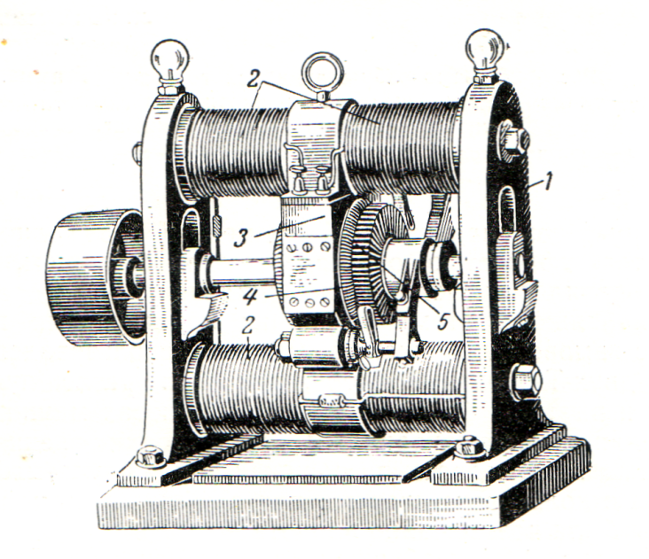

Когда говорят о подводных лодках, то их первое появление в художественной литературе связывают с Жюль Верном (1828-1905г.г.), вспоминая вымышленный подводный корабль капитана Немо –«Наутилус», описанный автором в романе «Двадцать тысяч лье под водой» (1869 г.).
Однако, идея существования лодки, способной погружаться и передвигаться под водой не была чем-то новым и неизвестным для современников автора. Подводные аппараты разной степени совершенства разрабатывались задолго до появления романа и о их существовании было известно.
Идея подводного погружения появляется в литературных произведениях средневековья. Первое упоминание о подводном погружении на морское дно в ІV веке до н. э. Александра Македонского появилось в литературном произведении «История Александра Великого», написанном в 1180 году Бертраном Парижским:
«Рабочие ему смастерили великолепный корабль, Весь из прозрачного стекла; столь красивого еще не видели. Также ставят светильники внутри этой бочки, что горят к радости и удовольствию, Так, что не будет в море столь маленькой рыбешки, Какую царь хорошо бы не видел, ловушки или битвы…. …..Наверху закрепили кольцо, за которое Держится цепь с крепкими звеньями. Бочку переносят на корабль, что на волнах, И со всех сторон запечатывают свинцом. Царь Александр вошел туда с двумя товарищами, И моряки выходят в открытое море. (Царь) приказывает людям опустить его (в море). И когда бочка туда была опущена, От светильников, горящих там, стало очень светло. На бочку внимательно глядели рыбы.»
Известны так же рисунки Леонардо да Винчи (1452-1519 г.г.) с проектом подводной лодки которые датируются примерно 1502 г., на которых он оставил следующий комментарий: «С помощью приспособлений люди получат возможность оставаться под водой в течение определенного времени… Я не публикую и не разглашаю мой метод по причине злобной природы людей, которые занялись бы предательскими убийствами на дне морей, разрушая корабли и топя их вместе с командой», в связи с чем точной конструкции корабля они не содержат.
Исследователями установлено, что первое документальное подтверждение подводного погружения человека относится к 1531 году и связано оно с попыткой отыскать на озере вблизи Рима затонувшие вместе с галерами сокровища на глубине 22 метров, и к середине XVII века шведы с помощью водолазного колокола подняли на поверхность более 50 пушек с затонувшего корабля «Ваза».
Первая в истории подводная лодка была построена в 1620 г. изобретателем, химиком и физиком голландского происхождения Корнелиусом Дреббелем (1572-1633 г.г.). Для передвижения лодки использовался шест с помощью, которого отталкивались от дна. В последующем на протяжении нескольких лет он вносил изменения в конструкции корабля, что в итоге позволило ему создать подводную лодку, которая могла удерживать внутри до 16 человек, погружаться и всплывать, перемещаться с помощью весел. Изобретение Дроббеля в течение 10 лет использовалось в Англии для развлечения людей, совершая рейсы по реке Темза между Гринвичем и Вестминстером.
Первую в России модель подводной лодки построил крестьянин Ефим Никонов в 1721- 1724 г.г. Опытный образец лодки свободно погружался, всплывал и маневрировал под водой. Построенная в натуральную величину лодка при спуске на воду ударилась о каменистый грунт и проломила днище. Работы по строительству судна были прекращены после смерти Петра I (1725 г.).
В 1800 г. американский инженер и изобретатель Роберт Фултон (1765-1815 г.г.) построил модель подводной лодки, которая могла вмещать трех человек. При первом спуске под воду Фултон с матросом оставался под водой до 20 минут и прошёл под водой значительное расстояние. Вторая его модель подлодки, имевшая название «Nautilus» и вмещавшая 4-х человек пробыла под водой более часа и прошла расстояние в ½ мили (1,9 км.). Источником энергии для передвижения под водой был гребной винт приводился в движение вручную, с помощью ворота.
Попытки создания подводных аппаратов предпринимались инженерами и учеными Англии, Франции, США и России на протяжении XVIII – XIX веков. Однако, достаточно долго подводные лодки представляли собой очень небольшие, несовершенные и тихоходные суда в связи с чем не могли получить широкого применения. Отсутствие совершенных источников возобновляемой энергии затрудняло реализацию идеи подводного судоходства. Паровые двигатели, появившиеся впервые в 60-х годах XIX века и использовавшиеся на пароходах того времени, и двигатели внутреннего сгорания, преобразовывающие химическую энергию топлива в механическую, не могли работать в условиях подводного плавания без притока воздуха извне, кроме того, эти машины отличались большим весом на единицу мощности, что затрудняло возможность создания просторной и маневренной лодки для подводного плаванья.
К моменту написания Ж. Верном романа (1869 г.) в реальности не существовало подводной лодки, которая могла бы длительное время работать в подводном положении без контакта с атмосферой. Русский изобретатель, И.Ф. Александровский (1817-1894 г.г.), построил в 1865 году самую большую на то время в мире подводную лодку, которая и мела 33 метра длины, 4 метра ширины и высоту — 5,5 метра, снабженную двумя пневматическими (воздушными) двигателями, работающими за счет воздуха, сжатого под большим давлением и размещенного в лодке в особых резервуарах (200 баллонов). Лодка вошла в историю отечественного кораблестроения как первая лодка с механическим двигателем. В 1871 году при испытаниях на погружение она на глубине 27 метров не выдержала давления воды, дала трещину и затонула. В 1881 году И.Ф. Александровский разработал проект ещё одной подводной лодки водоизмещением 460 тонн с паровым двигателем, который топился нефтью.
Художественный вымысел Ж. Верна представил читателю идею обитаемого подводного электрического корабля, способного длительно автономно находится под водой, выполняя кругосветные рейсы без дозаправки и перезарядки. Описанная Ж. Верном конструкция и внутреннее наполнение корабля отличались от существовавших опытных образцов и нашли свое практическое воплощение только в ХХ веке. Именно по этой причине роман Ж. Верна «Двадцать тысяч лье под водой» относится к жанру научной фантастики. Энергоустановка «Наутилуса» до сих пор остаётся фантастикой - даже в настоящее время не существует ни батарей, ни аккумуляторов приемлемых размеров, массы и достаточной емкости, чтобы обеспечить подводной лодке возможность выполнять настолько длительные рейсы без всплытия и дозаправки, как это описал в своем романе Ж. Верн.
Вот как описывает подводный корабль автор романа:
«…если идти от миделя к форштевню на носовую часть: столовая метров пять длиною, отделенная от библиотеки непроницаемой, точнее говоря, водонепроницаемой переборкой; библиотека длиною метров пять, салон в длину десять метров, отделенный второй водонепроницаемой переборкой от каюты капитана длиной пять метров; рядом каюта в длину два с половиною метра …резервуар для хранения воздуха, который занимает все пространство до форштевня, то есть семь с половиною метров. Итого тридцать пять метров! Водонепроницаемые переборки и герметически запиравшиеся двери служили надежной защитой, если бы в какой-либо части подводного корабля образовалась течь... Судно представляет собой сильно удлиненный цилиндр с коническими концами. По своей форме оно напоминает сигару, а эта форма считается в Лондоне лучшей для подобного рода конструкций. Длина цилиндра семьдесят метров; наибольшая ширина - восемь метров. Пропорция судна несколько отступает от обычного для ваших быстроходных паровых судов отношения ширины к длине, как единица к десяти, но и при данном соотношении лобовое сопротивление невелико и вытесняемая вода не затрудняет хода корабля… Эти две величины уже позволяют вычислить площадь и объем "Наутилуса". Площадь его равняется одной тысяче одиннадцати и сорока пяти сотым квадратных метров, объем равен одной тысяче пятистам и двум десятым кубических метров; короче говоря, корабль, полностью погруженный в воду, вытесняет тысячу пятьсот и две десятых кубических метров, или тонн, воды… "Наутилус" имеет два корпуса, один наружный, другой внутренний; они соединены между собой железными балками, имеющими двутавровое сечение, которые придают судну чрезвычайную прочность. В самом деле, благодаря такой конструкции судно противостоит любому давлению, подобно монолиту. Двойная обшивка корабля изготовлена из листовой стали, удельный вес которой равен семи и восемь десятых. Толщина наружной обшивки не менее пяти сантиметров, вес триста девяносто четыре и девяносто шесть сотых тонны. Внутренняя обшивка, киль — в вышину пятьдесят сантиметров и в ширину двадцать пять сантиметров, весом шестьдесят две тонны, - машины, балласт и прочее оборудование, обстановка, внутренние переборки и пилерсы - все это вместе взятое весит девятьсот шестьдесят одну и шестьдесят две сотых тонны. Таким образом общий вес судна составляет одну тысячу триста пятьдесят шесть и сорок восемь сотых тонны…
В устройстве «Наутилуса» автор описал такие детали и принципы их действия, которые не существовали в реальности, и современной наукой не были еще открыты. Например, подводная лодка была оснащена:
- водолазным шлюзом для выхода из корабля в подводное пространство;
- скафандрами, при помощи которых экипаж лодки свободно покидает ее под водой на больших глубинах;
- дистиллятором морской воды;
- системой судовой вентиляции;
- термическими зондами для измерения температуры в различных слоях воды;
- горизонтальным рулем для погружения лодки;
- двойным корпусом;
- электричеством.
Инженер Лебеф, построивший через 30 лет после выхода романа первую подводную лодку с двойным корпусом, назвал Ж. Верна соавтором своего изобретения, а французский академик Ж. Клод вдохновился в романе идеей о возможности получения электроэнергии от проводников, погруженных в морскую воду на разные глубины. Необычным для современников Ж. Верна стала и предложенная автором идея практического применения подводных аппаратов. Все известные к моменту написания романа изобретения подводных лодок были подчинены идеи их использования в военных целях. Ж. Верн открыл перед читателями возможности использования подводных аппаратов в мирных целях - изучение подводного мира и его обитателей.
Фантастическая мысль Ж. Верна не только опередила технический прогресс, представив читателю подводную лодку не похожую на существующие в современной действительности, но и значительно опередила оценку современниками роли электрической энергии в жизни человека и ее влияния на научно-технический прогресс.
В романе всю жизнедеятельность подводной лодки автор построил исключительно на использовании электрической энергии: «…вдруг наши глаза, привыкшие к полной темноте, ослепил яркий свет. … живительный свет исходил из электрической арматуры в виде полушария, вделанного в потолок кабины…электрическая энергия не вырабатывает кислород, потребный для дыхания, но она приводит в движение мощные насосы, нагнетающие воздух в специальные резервуары, что позволяет мне, если потребуется, долгое время находиться в глубинных водах... Теперь взгляните на эти часы: они электрические и в точности не уступают лучшим хронометрам… Циферблат, который вы видите перед собой, служит указателем скорости "Наутилуса". Проводами он соединяется с винтом лага, и стрелка постоянно дает мне знать, на какой скорости идет судно… Шлюпка соединена с судном электрическим кабелем. Я даю телеграмму — и "Наутилус" возвращается на поверхность океана! …мы заглянули в камбуз ... электричество оказалось удобнее всякого газа. Все готовилось на электричестве. Провода, включенные в аппаратуру в виде платиновых пластинок, раскаляли их добела, поддерживая в плите температуру, нужную для приготовления пищи. На электричестве работал и дистилляционный аппарат, снабжавший судно чистейшей пресной водой. Возле камбуза помещалась ванная комната, комфортабельно оборудованная, с кранами для горячей и холодной воды…Машинное отделение, занимавшее в длину метров двадцать, было ярко освещено. Помещение состояло из двух половин: в первой находились батареи, вырабатывавшие электрическую энергию, во второй — машины, вращавшие винт корабля… Электрическая энергия, выработанная батареями, передается в машинное отделение, приводит в действие электромоторы, которые через сложную систему трансмиссий сообщают вращательное движение гребному валу. И несмотря на то, что винт в диаметре равен шести метрам, скорость вращения его доходит до ста двадцати оборотов в секунду…развивая скорость пятьдесят миль в час.…чтобы ориентироваться в пути [во мраке вод], необходим свет, который рассеивал бы тьму...позади рубки помещается мощный электрический рефлектор, который освещает море на расстоянии полмили...»
Пророческая сила романа Ж. Верна о роли электричества в жизни человека заложена в словах главного героя романа - Капитана Немо, создавшего легендарный корабль: «…я дал этой драгоценной силе широкое применение. Она изливает на нас свой равномерный и постоянный свет, чего недостает солнечному свету… в природе существует могущественная сила, послушная, простая в обращении. Она применима в самых различных случаях, и на моем корабле все подчинено ей. От нее исходит все! Она освещает, отапливает, приводит в движение машины. Эта сила — электрическая энергия! ... способы использования электрической энергии на корабле значительно отличаются от общепринятых…электричество дает "Наутилусу" тепло, свет, способность двигаться, словом, жизнь!»
На момент написания и издания романа учеными не было еще создано совершенных электрических приборов, а осуществившие приборы не имели широкого практического применения. Мнение современников Ж. Верна в отношении возможностей электрической энергии отражают слова одного из главных героев книги - профессора Пьера Аронакса, случайно попавшего на борт «Наутилуса»: «Однако, капитан, исключительная быстроходность вашего корабля плохо согласуется с возможностями электрической энергии. До сей поры динамическая сила электричества представлялась весьма ограниченной и возможности ее чрезвычайно ничтожны» …Капитан, … вы, очевидно, сделали научное открытие, выявив двигательную мощь электрической энергии! Когда-нибудь люди поймут это! …Вы … разрешили задачу, применив силу, которая в будущем заменит ветер, воду и паровые двигатели!».
Между изданием романа Ж.Верна (1869 г.) и созданием электродвигателя (1889 г.), способного хотя бы отдаленно приблизить читателя к фантастической идее автора прошло минимум 20 лет.
Технологическое развитие XIX века начиналось с создания и использования паровых машин и только в конце этого века на смену пару приходит электричество. Интересно, что даже у некоторых ученых и писателей фантастов был не только противоположный автору взгляд на перспективы развития и применения электродвигателей, но и на саму идею развития подводного кораблестроения. Например, американскому изобретателю в области электротехники Т. Эдисону (1847-1931) принадлежит высказывание, сделанное им в 1889 г.: «Нет, нет, переменный ток - это вздор, не имеющий будущего. Я не только не хочу осматривать двигатель переменного тока, но и знать о нем». В 1901 г. в Англии вышла книга Г. Уэллса, посвящённая предсказаниям развития техники в XX веке и тому, как это развитие повлияет на человечество. Перевод книги Г. Уэллса вышел в России в 1902 г. под названием «Предвидения» с подзаголовком «О воздействии прогресса механики и науки на человеческую жизнь и мысль» (это точный перевод оригинального заглавия). Оценивая перспективы развития подводного кораблестроения Г. Уэллс писал: «Признаюсь, как я ни пришпориваю своё воображение, а оно отказывается понять, какую пользу могут приносить эти лодки. Мне кажется, что они способны только удушать свой экипаж и тонуть. Уже одно длительное пребывание в них должно расстраивать здоровье и деморализовать человека. Организм ослабевает от долгого вдыхания углекислоты и нефтяных газов под давлением четырёх атмосфер. Даже если вам удастся повредить неприятельское судно, четыре шанса против одного, что люди его, дышавшие свежим воздухом, спасутся, а вы с вашей лодкой пойдёте ко дну».
Основные особенности устройства и функционирования подводных лодок, используемые в современном подводном кораблестроении, сложились только к началу ХХ века, когда был фактически создан электрический двигатель - устройство, основной функцией которого, является преобразование электрической энергии в механическую (преобразования энергии тока в механическое движение). Учитывая эти особенности романа в качестве основного направления исследования в своей работе я посвятил изучению вопроса создания электрического двигателя.
Первый в мире химический источник постоянного тока в 1800 г. сконструировал итальянский физик А. Вольта (1745-1827 г.г.) – «вольтов столб» (рис.1), состоящий из 20 пар медных и цинковых кружочков, разделённых кусочками ткани, смоченными солёной водой (или раствором щёлочи). Электричество получалось благодаря химической реакции двух разных металлов. По сути, электричество появлялось буквально из ниоткуда.
В 1820 датский физик Ханс Кристиан Эрстед (1777-1851 г.г.) сделал открытие, что протекающий ток способен отклонять в плоскости магнитную стрелку. Во время лекций Эрстед показывал студентам тепловое воздействие тока на проводник, подключенный к Вольтовому столбу. Проводник лежал в меридианном направлении поверх морского магнитного компаса, стрелка которого располагалась параллельно проводнику и немедленно поворачивалась перпендикулярно ему при включении тока. Обнаружение в 1819 г. Эрстедом способности электрического тока вызывать механическое движение магнитной стрелки опроверг сложившееся у ученых 17-18 в.в. мнение, что электричество и магнетизм — два разных явления, а основанное на эксперименте его предположение, что поток электричества по проводу создает вокруг него магнитное поле явились толчком к проведению учеными большого числа экспериментов по преобразованию электрической энергии в механическое движение. Эрстед сумел показать связь между магнетизмом и электричеством. Объяснить же это явление смог Андре-Мари Ампер (1775-1836 г.г.), после проведенных им в 1820-1827 годах многочисленных экспериментов, в результате которых он установил, что протекание токов в двух проводниках приводит к их взаимодействию — они отталкиваются или притягиваются друг к другу - закон механического взаимодействия электрических токов (Закон Ампера). Ампер не только увидел это, но и вывел формулу, позволяющую определить силу взаимодействия проводников.
В 1821 году английский физик и химик М. Фарадей (1791- 1867 г.г.) добился непрерывного электромагнитного вращения с помощью прибора, состоявшего из двух последовательно включенных устройств (рис. 2). Общепринято именно эту конструкцию считать самым первым электродвигателем. Непрерывное вращение стрелки происходило при взаимодействии магнита с электрическим током в проводнике, создавая безостановочное трансформирование электрической энергии в механическую. Когда через провод пропускался ток, провод вращался вокруг магнита, показывая, что ток вызывал циклическое магнитное поле вокруг провода.
| Оба двигателя содержали серебряные чаши (1) и (2) с ртутью, постоянные магниты (3) и (4), проводники (5) и (6) на стойке (7), погруженные в ртуть. Двигатели отличались друг от друга тем, что в правом магнит (4) был неподвижен и проводник (6) свободно вращался вокруг магнита, а в левом двигателе наоборот: проводник (5) был неподвижным, а магнит (3) вращался. |
В 1831 г. Майкл Фарадей и в 1832 г. американский физик Джозеф Генри (1797-1878 г.г.) опытным путем независимо друг от друга открыли электромагнитную индукцию – когда вращающийся вокруг катушки с проводником магнит приводил к появлению в ней электродвигательной силы. Опыты Фарадея показали, что в замкнутом контуре при изменении магнитного потока, проходящего через него, возникает электрический ток, например, если в магнитном поле крутить замкнутую рамку, то в ней появится электрический ток. Фарадей так сформулировал закон электромагнитной индукции: «Всякое изменение магнитного поля во времени возбуждает в окружающем пространстве электрическое поле». Все устройства генерации электрического тока в современной электроэнергетике (кроме химических – аккумуляторов и батарей) работают на основе сделанного этими учеными открытия.
В 1833 году российский физик Э.Х. Ленц (1804-1865 г.г.) изучил опыты Фарадея и вывел закон, позволяющий определить направление индукционного тока: «Индукционный ток всегда имеет такое направление, что он ослабляет действие причины, возбуждающей этот ток». После этого Ленц установил, что электрические машины обратимы - генератор может выступать двигателем и наоборот.
Открытие Фарадея и Ленца имело огромные последствия для техники и всей человеческой истории. Стало ясно, каким образом механическую энергию превращать в электрическую, а электрическую — обратно в механическую. Первое из этих преобразований легло в основу работы электрогенератора, а второе — электродвигателя. С момента сделанного ими открытия потребовалось около сорока лет на создание работоспособного генератора и еще двадцать лет на изобретение практичной модели промышленного электродвигателя.
В 1833 г. английским физиком У. Стёрдженом (1783-1850 г.г.) создан электродвигатель на постоянном токе с постоянными магнитами на роторе (рис. 3), который считается прототипом современных бесконтактных двигателей постоянного тока. Двигатель мог обеспечить мощность достаточную для привода машин, но его применение было сильно ограничено из-за его низкой выходной мощности из-за использования в конструкции слабых постоянных магнитов.
| Двигатель содержит: статор с четырьмя стержневыми электромагнитами - 1, ротор с двумя постоянными магнитами (возбуждение) - 2, а также ртутный коммутатор токов электромагнитов - 3, который Стёрджен позже заменил на более практичный пружинный коммутатор, став изобретателем первого не ртутного коммутатора. Полюса ротора обозначены строчными буквами (n - s), а статора - прописными (N - S). При положении полюсов ротора, как показано на рисунке, ротор будет поворачиваться против часовой стрелки. При прохождении магнита ротора мимо ближайшего электромагнита статора все электромагниты должны поменять полярность с помощью коммутатора. Тогда движение ротора продолжится в ту же сторону. Аналогичную структуру имеют современные бесконтактные двигатели постоянного тока, в которых механический коммутатор заменен на электронный с бесконтактным датчиком положения ротора. |
Дальнейшее развитие в создании электродвигателей связано с изобретением в 1825 г. У. Стёрдженом электромагнита.
| > | подковообразный сердечник с обмоткой, концы которой погружены в чашечки с ртутью. Обмотка выполнялась неизолированным проводом, накрученным на покрытый лаком сердечник. |
Электромагнит сразу стали использовать в конструкциях электродвигателей. Например, среди первых было устройство, созданное венгерским ученым А. Йедликом в 1828 г. (рис. 5), но опубликовал он свое изобретение только спустя почти двадцать лет.
| > | неподвижная обмотка (1) и вращающийся электромагнит (2), который подключается к батарее через ртутный коммутатор (3) в виде чашечки с ртутью, разделенной перегородкой на два изолированных сектора, в которые погружены выводы обмотки электромагнита. |
Большинство созданных образцов двигателей имели очень низкую мощность (сотые доли ватта) и не обладали практичностью из-за использования ртутных коммутаторов, поэтому их невозможно было реально использовать. Стремясь создать электродвигатель для производственных нужд, изобретатели пытались заставить железный сердечник двигаться в поле электромагнита возвратно-поступательно, так, как движется поршень в цилиндре паровой машины.
Открытие законов электродинамики Ампером и законов электромагнитной индукции Фарадеем создали теоретические предпосылки возможности создания электродвигателя для получения механического движения за счет электрической энергии. Изобретение батареи А. Вольта и электромагнита У. Стерджена заложили практическую основу для создания электродвигателей.
Первый в мире практически пригодный электродвигатель был изобретен русским ученым Б. С. Якоби (1801-1874 г.г.). В 1834 г. он создал двигатель с вращающимся якорем (рис.6) и опубликовал теоретическую работу «О применении электромагнетизма для приведения в движение машины». Электродвигатель с вращающимся рабочим валом имел мощность в 15 Вт, частоту вращения вала в диапазоне от 80 до 120 оборотов за 60 секунд и был способен поднимать пятикилограммовые грузы на 30 сантиметров в секунду. Двигатель работал на силе притяжения и отталкивания между магнитами, которые крепились на разные части ротора и неподвижную раму. Питание электродвигатель получал от гальванических батарей. Завершал конструкцию коммутатор, благодаря которому можно было попеременно изменять полярность магнитов на подвижных частях двигателя. Принцип работы двигателя был основан на взаимодействии двух групп магнитов: неподвижных и установленных на вращающемся роторе. До изобретения Якоби таких технологий не существовало вообще.
Б.С. Якоби первым предложил использовать для движения судов электрическую энергию - в качестве альтернативы или даже замены паровых двигателей. В то время парусные суда уходили в прошлое, но паровые двигатели в мореходстве с большим трудом пробивали себе дорогу. Морякам и судовладельцам паровой двигатель казался слишком ненадёжным и громоздким. В течение пяти лет после своего открытия он постоянно совершенствовал свою технологию.
| > | 1 - обмотка статора с восемью аксиальными полюсами электромагнитов (возбуждение), 2 - ротор, 3 - обмотка ротора также с восемью полюсами (якорь), 4 - щеточно-коллекторный узел (коммутатор), с четырьмя металлическими контактными рычагами и коллекторными дисками, 5 - вал, 6 - гальваническая батарея. Питание двигатель получал от цинкоплатиновых гальванических элементов. |
Первым реальным применением электродвигателя на водном транспорте считается 1839 г., когда на р. Нева было организовано катание со скоростью 3 км/ч на лодке, вмещавшей 14 пассажиров, оснащенной электромотором Якоби мощностью в 1 лошадиную силу, запитанным от 69 элементов Грове (320 гальванических батарей). Общая мощность привода составляла 550 Вт. В последующем было решено цинк заменить на платину, батареи стали занимать меньше места, скорость судна возросла в два раза, но всё равно осталась небольшой – 4,3 км/ч.
Поскольку первыми были изобретены источники постоянного тока - гальванические элементы и батареи, то изобретаемые на их основе первые электродвигатели были двигателями постоянного тока.
Возможно, идея Якоби об использовании для работы двигателей гальванических батарей была положена в основу романа Ж. Верна. Описывая принцип работы электродвигателей подводной лодки, капитан Немо произнес: «…я пользуюсь элементами Бунзена, а не Румкорфа. Последние не дали бы мне такого высокого напряжения. Батарей Бунзена у меня не так много, но зато они работают на большой мощности». [Элемент Грове, элемент Бунзена представляли собой первичный химический источник тока, в котором анодом является цинк, катодом — прессованный графит, а электролитом - водный раствор хромовая смеси. Электродвижущая сила элемента составляет около 1 вольта].
В результате проведенных испытаний электродвигателя на лодке было установлено:
- неэкономичность электродвигателей - питании электродвигателей током от гальванических батарей механическая энергия получалось в десятки раз дороже парового двигателя;
- малая энергоёмкость гальванических батарей, т.е. малая мощность на единицу веса. Так, вес 320 шт. гальванических батарей, использованных для работы двигателя в лодке, составлял 200 кг., что позволяло добиться мощности в 550 Вт и скорости лодки не более 3-4 км/ч. Для увеличения мощности двигателя необходимо было большее число батарей, вес и габариты такой конструкции делали невозможным их использование в транспортных установках.
Однако, Б.С. Якоби первым рассмотрел применение электродвигателя с точки зрения инженера-практика и при его создании воплотил три идеи, получившее дальнейшее развитие в электротехнике:
- вращательное движение якоря в электродвигателе;
- наличие коммутатора с трущимися контактами;
- использование магнитов в подвижной и неподвижной частях электродвигателя.
Эксперимент по использованию двигателя на лодке, продолжавшийся полгода показал, что будущее их применение находится в прямой зависимости от удешевления электрической энергии, т.е. от создания генератора, более экономичного, чем гальванические элементы, а сами электродвигатели должны иметь по возможности малые габариты, большую мощность и больший коэффициент полезного действия. Поэтому в последующем ученые направили свои усилия на изобретение устройств, позволяющих заменить гальванические батареи в конструкции двигателя. Проблема заключалась в том, что используемые в конструкции двигателя электромагниты сами потребляли электрическую энергию, и для их возбуждения требовалась отдельная батарея.
В 1866 г. немецкий инженер В. Сименс (1816-1892 г.г.) открыл принцип самовозбуждения. Одновременно с ним то же открытие сделали некоторые другие изобретатели. В январе 1867 года он выступил в Берлинской Академии с докладом «О превращении рабочей силы в электрический ток без применения постоянных магнитов». Сименс установил, что в каждом электромагните, после того как намагничивающий ток переставал действовать, всегда оставались небольшие следы магнетизма, которые были способны вызвать слабые индукционные токи в катушке, снабженной сердечником из мягкого магнитного железа и вращавшейся между полюсами магнита. Используя эти слабые токи, можно было привести генератор в действие без помощи извне., т.е. не требовалось использования дополнительного источника тока в виде гальванических батарей.
С открытием принципа самовозбуждения начался новый этап в развитии генераторов и электродвигателей.
Экономичным источником электрической энергии, позволявшим получать значительные мощности при высоком коэффициенте полезного действия (КПД) и малых габаритах, и весе стала созданная в 1870 г. бельгийским изобретателем З. Граммом (1826-1901 г.г.) конструкция генератора с самовозбуждающимися магнитами
| > | 1 – чугунная станина; 2 – электромагниты; 3 – кольцевой якорь; 5 – коллекторные пластины |
Принцип обратимости электрических машин, открытый в 1833 году российским физиком Э.Х. Ленцем, был уже хорошо известен, поэтому машина Грамма использовалась как в режиме генератора, так и в режиме двигателя. В начале 70-х годов обе линии развития электрических машин – генераторов и двигателей – объединились.
Основной вклад в создание электродвигателей, конструкция которых является основой современных электродвигателей внес русский ученый М.О. Доливо-Добрвольский (1862-1919 г.г). Он является создателем простого и надежного в использовании асинхронного двигателя. Двигатель такой конструкции используется и в наши дни.
В 1888 г. Галилео Феррарис объяснил явление вращающегося магнитного поля и применение переменного тока в конструкции электродвигателя, создав модель двухфазного асинхронного двигателя. Аналогичная конструкция была создана и американский инженер Н. Тесла (1856-1943 г.г.) Принцип работы устройства был основан на магнетизме, что определяет присутствие в конструкции магнитов и материалов с магнитными свойствами для создания вращающегося магнитного поля. Сделанный Феррарисом вывод, что изобретенный им двигатель не сможет иметь КПД выше 50%, в связи с чем применение систем переменного тока нецелесообразно, был опровергнут М.О. Доливо-Добрвольским. Начиная с 1888 года, М. О. Доливо-Добровольский занялся изучением многофазных систем и возможностью применения на практике переменного тока, что позволило ему сделать вывод об ошибочности теории Феррариса.
Для своих работ Доливо-Добровольский стал использовать не двухфазный ток, как это делал Феррарис и Никола Тесла, а трехфазный генератор переменного тока (три переменных тока, каждый из которых сдвинут по фазе на 120 градусов) и с помощью него привел в действие свой первый трехфазный двигатель (рис.9) со статором в виде кольца Грамма, питаемого в трех точках, и ротора в виде сплошного медного цилиндра.
| > | > |
Работа асинхронного двигателя основана на электромагнитном взаимодействии между статором и ротором. Токи статорных обмоток создают вращающееся магнитное поле, которое, в свою очередь, индуцируют токи в короткозамкнутой обмотке ротора. В результате взаимодействия токов ротора с магнитным полем статора создается вращающий момент.
С 1891 г. начинается новая страница в истории электротехники и развитие технического прогресса. В этом году на электротехнической выставке во Франкфурте было успешно произведено испытание системы трехфазного тока (электродвигатель М.О. Доливо-Добровольского) в виде передачи электроэнергии на расстояние в 175 километров от Лауффенского водопада до Франкфурта. Ток приводил в движение трехфазный двигатель Доливо-Добровольского в 100 л. с., который в свою очередь приводил в действие гидравлический насос, который подавал воду для ярко освещенного (1000 шт. электрических ламп накаливания) десятиметрового декоративного водопада. Это был самый мощный на то время трехфазный асинхронный двигатель в мире.
И все же в XIX в. подводные лодки передвигались с помощью мускульной силы человека и представляли собой очень небольшие, несовершенные и тихоходные суда. Первая попытка оснастить лодку электродвигателем была реализована в 1886 г. Русский изобретатель С.К. Джевецким (1843-1938 г.г), модернизируя свой корабль установил аккумуляторную батарею и электромотор мощностью 1 л.с., которые спроектировал сам, обеспечив таким образом возможность лодки развить под водой скорость лодки до 7 километров в час. Лодка сохранилась до настоящего времени и находится в Санкт-Петербурге как экспонат Центрального военно-морского музея. В это же самое время французский инженер Густав Задэ (1825-1891 г.г.) разработал проект и в 1886 г. приступил к строительству, а в 1888 г. приступил к испытаниям экспериментального образца подводной лодки с электрическим двигателем (электромотор Крэбса) в 50 л.с. с питанием от аккумуляторной батареи, вес которой составлял 9,5 т.
Создание электрического двигателя явилось мощным толчком в развитии подводного кораблестроения в ХХ веке. Только к середине ХХ в. Подводные лодки превратились в настоящие боевые корабли, ставшие грозным морским оружием.
Большая часть современных подводных лодок снабжается комплексной электроэнергетической системой, в устройстве которой имеются аккумуляторы, электродвигатели и дизельные генераторы. На максимальной скорости аккумуляторные батареи подводной лодки разряжаются за несколько часов. Подзарядку осуществляют дизельным генератором. Максимум, на что хватает заряда – до четырех суток. Лодка обязательно должна всплывать, чтобы аккумуляторы зарядились.
Приблизится к идее Ж. Верна неограниченной дальности плавания подводного корабля погружения и скорости его движения под водой стало возможным только с использованием в конструкции двигателей ядерного топлива. В атомных подводных лодках устанавливается реактор с водяным или жидкометаллическим теплоносителем, который генерирует энергию для работы двигателя. Ядерная энергия дает возможность значительно увеличить время нахождения под водой – от 80 до 99 % всего ходового времени. и обеспечивают лодке скорость, соизмеримую со скоростью надводных кораблей.
Развитие подводного кораблестроения дало толчок в развитии таких разделов физики как: - «гидродинамика», изучающая различные аспекты движения жидкости и газов и их взаимодействия с окружающей средой и твердыми телами, такие как течение, вихревое движение, сопротивление, турбулентность и другие явления (давление, плотность, скорость, сила сопротивления и др.). - гидравлика , Термодинамикой акустикой